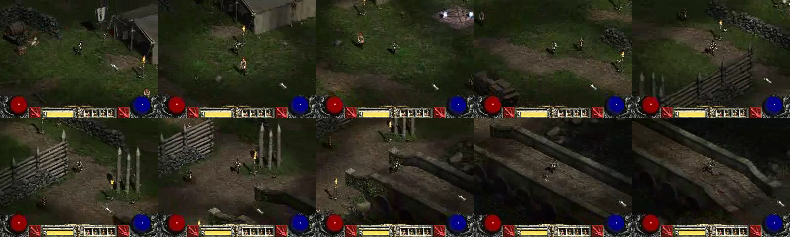
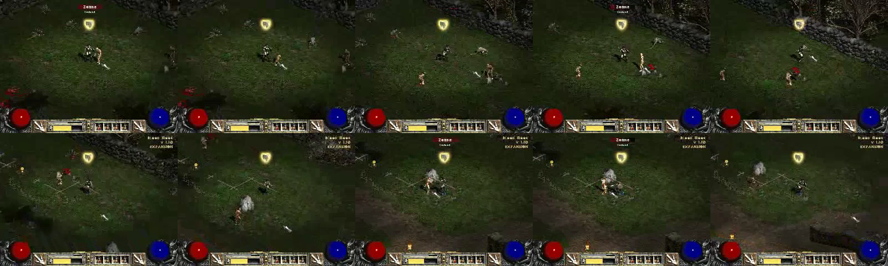

E01D · Original Diablo II + Lord of Destruction
2005 native client recording. Not D2R. Recorded 320×240; unsuitable for sharpness comparison.
A · Town traversal · source 20–30s

B · Blood Moor combat · source 60–70s

Findings and limitations · Native source